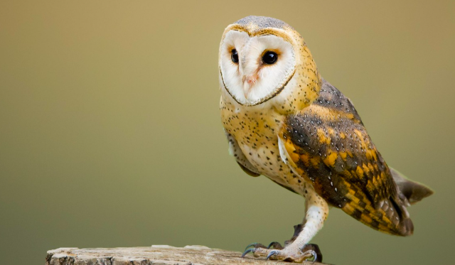

Lifespan: 4 years in the wild, 20 years in captivity
Top speed: 40 mph
Weight: 15-25 oz
Diet: Small mammals such as shrews, rabbits, voles, and mice, occasionally birds and amphibians
Predators: Great horned owls, eagles, hawks, raccoons, oppossums
Range: North and South America, excluding northern Canada
Conservation Status: Least concern
Fun Fact: Like all owls, barn owls ears are not symmetrical. One is slightly lower than the other, allowing barn owls to determine where a sound is coming from with greater accuracy.
Fun Fact: Barn owls do not hoot, instead they make long, raspy screeches.